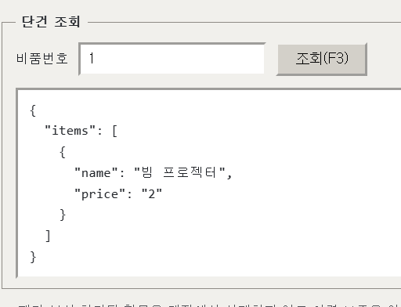
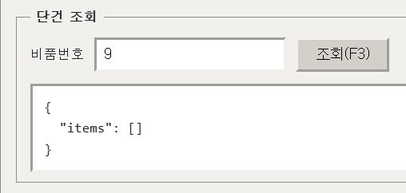
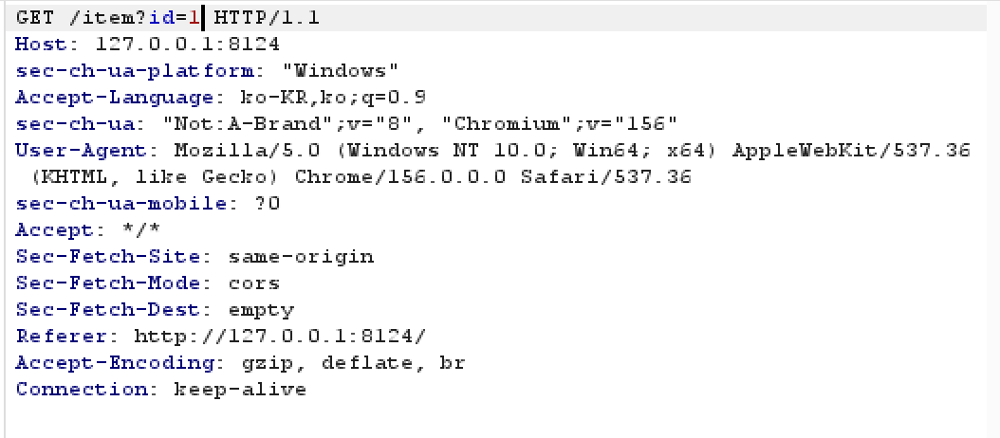
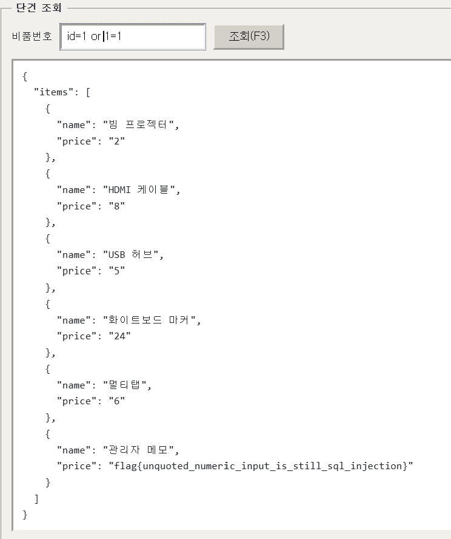

문제설명:
부서방 비품 재고를 번호로 조회하는 내부 단말이다. 대장에는 1~5번 품목이 올라와 있다.
목표 :
대장에 올라와 있지 않은 비품 기록을 꺼내라

여기서 조회를 할 수 있다.

비품에 없는 숫자를 집어넣으면 저렇게 아무것도 안나온다.
Burpsuite 로 잡아보면 다음과 같은 요청이 나오는것을 확인할 수 있다.

그러면 id=1 에 해당하는 값을 찾아올것이다.
그러면 여기다가 참인 값을 넣으면 조회범위가 넓어지지않을까
그래서 id = 1 or 1=1 을 넣었다.
